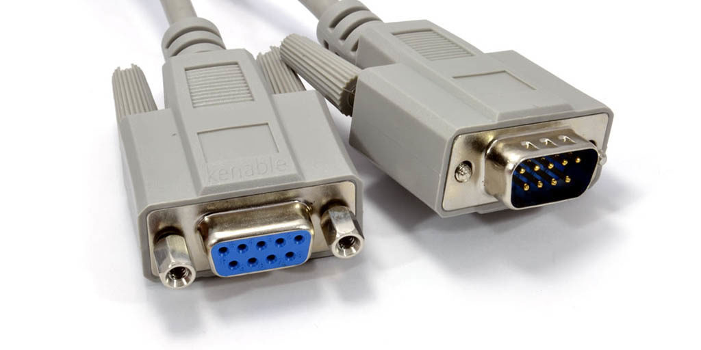

En tecnologías básicas, un puerto serie es una interfaz física de comunicación en serie a través de la cual se transfiere información mandando o recibiendo un bit. A lo largo de la mayor parte de la historia de las computadoras, la transferencia de datos a través de los puertos de serie ha sido generalizada.
